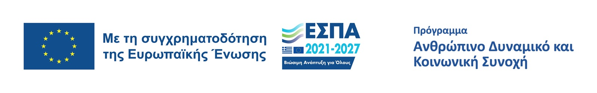

Επαγγελματικός καθαρισμός χώρων
Αναλαμβάνουμε κάθε έκταση — από μικρά αγροτεμάχια έως μεγάλα βιομηχανικά οικόπεδα. Γρήγορα, αξιόπιστα, με σεβασμό στο περιβάλλον.
Ολοκληρωμένες υπηρεσίες καθαρισμού για κάθε ανάγκη
Αφαίρεση άγριας βλάστησης, ψηλών χόρτων και θάμνων με εξειδικευμένα μηχανήματα.
Επαγγελματικό κλάδεμα και αφαίρεση επικίνδυνων δέντρων με πλήρη ασφάλεια.
Συλλογή και μεταφορά όλων των υπολειμμάτων για ολοκληρωμένο καθαρισμό του χώρου.
Εκχέρσωση και ισοπέδωση εδαφικών εκτάσεων για οικοδομική ή αγροτική χρήση.